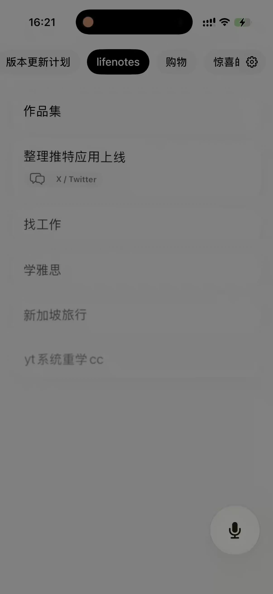
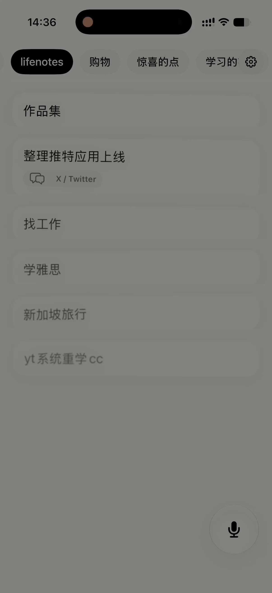
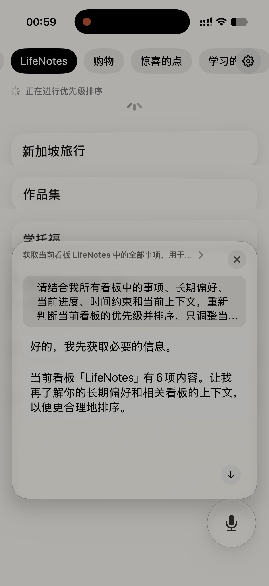
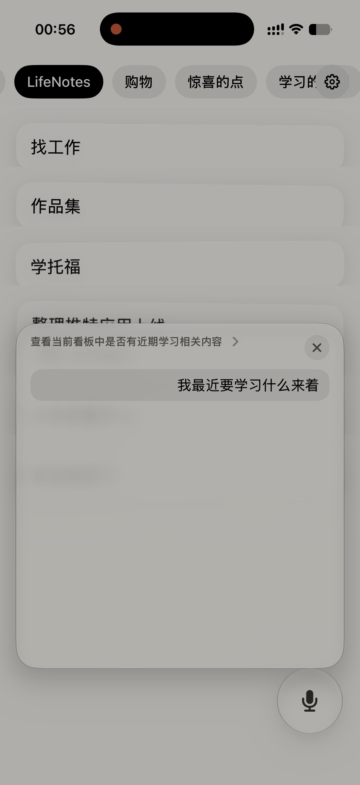
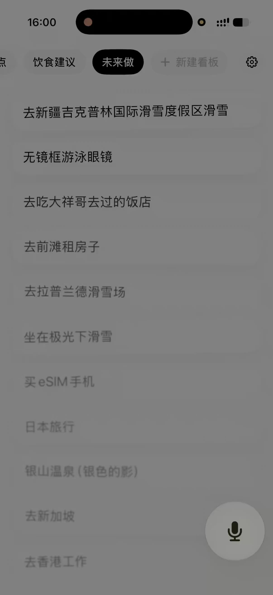
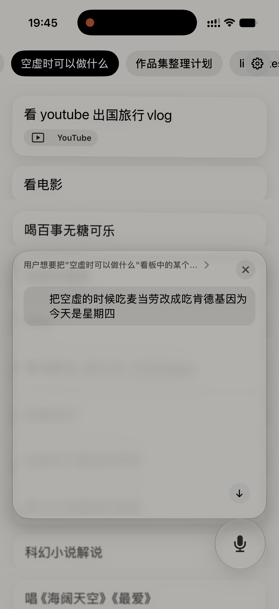

用自然语音和 LifeNotes 交流，
以帮你捕捉内容，并整理成清晰的记录。


用自然语音和 LifeNotes 交流，
以帮你捕捉内容，并整理成清晰的记录。

优先级不明确？
只需轻轻下拉，lifenotes 就能帮你理清轻重缓急。

笔记太多，忘记放在哪里？
只需提问，lifenotes 就能从过往记录中找到相关内容。

需要更多信息时，LifeNotes 也可以连接外部搜索。
从一个链接、一段问题，到一个需要补充背景的想法，
都可以帮助你获得更完整的上下文。

整个系统，都可以用语音交互。
删除记录、移动看板、修改事件
你只要说出来，LifeNotes 就能做到。
